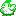

Stardew Valley Vanilla IDs
English (en-US)
- English (en-US)
- Português (pt-BR)
- Türkçe (tr-TR)
- Русский (ru-RU)
- 한국어 (ko-KR)
- 日本語 (ja-JP)
- Italiano (it-IT)
- Magyar (hu-HU)
- Français (fr-FR)
- Español (es-ES)
- Deutsch (de-DE)
Tool developed by Mateus Aquino to help you find the IDs of items in Stardew Valley updated for the 1.6 update.
Spawning items
You can spawn items by appending the item ID to your character's name and then talking to NPCs, or by buying a pet from Marnie appending the item ID to its name.
During early game you can easily trigger character's name spawns by talking to Gus via phone (or Pierre before 12:00) and after unlocking the cinema you can spam it by inviting Jodi with a Love Concession to the movie theater (fastest spawn rate).
Be aware that certain item IDs may exceed the pet's name character limit. In such instances, you can use the copy button provided by this tool to bypass the limit. It works by breaking lines to fit the codes into Marnie's text box width and wrapping the line breaks using the new dialogue command.
Warning: Use the item IDs below at your own risk. Doing so may affect your gaming experience.
During early game you can easily trigger character's name spawns by talking to Gus via phone (or Pierre before 12:00) and after unlocking the cinema you can spam it by inviting Jodi with a Love Concession to the movie theater (fastest spawn rate).
Be aware that certain item IDs may exceed the pet's name character limit. In such instances, you can use the copy button provided by this tool to bypass the limit. It works by breaking lines to fit the codes into Marnie's text box width and wrapping the line breaks using the new dialogue command.
Warning: Use the item IDs below at your own risk. Doing so may affect your gaming experience.